Institute of Statistical Mathematics, Tokyo, Japan
11/24/2026
Section 1 \;Introduction:\;Energy / radial mixing in MCMC
`A hidden scandal’ in MCMC literature
Section 2 \;Main Result:\;Analytic expression for Green–Kubo coefficient
which leads to a rigorous ordering result that FECMC always performs better than BPS
Section 3 \;Future direction
Fast asymptotic variance / ESS estimation & Sticky Manifold FECMC
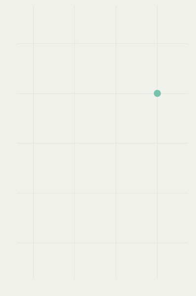
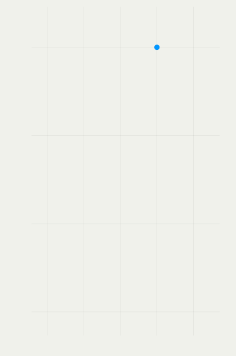
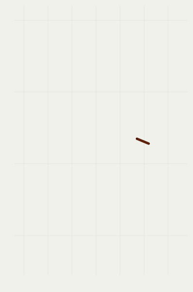
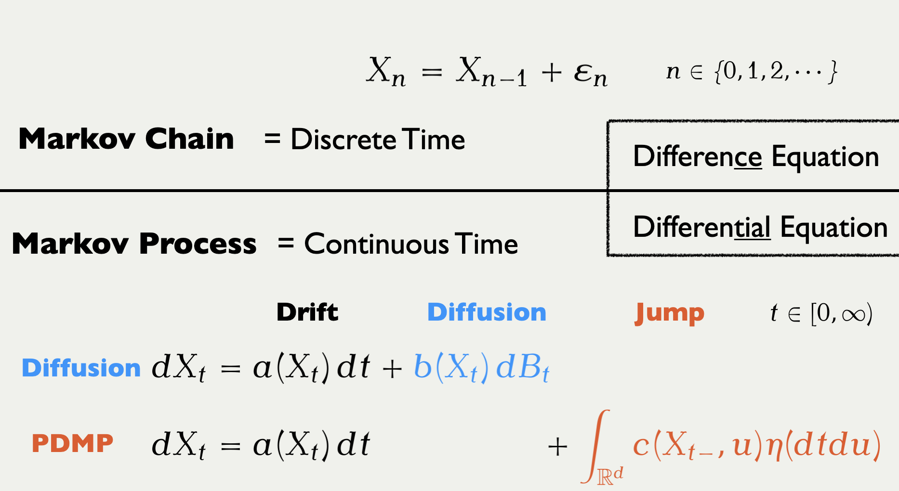
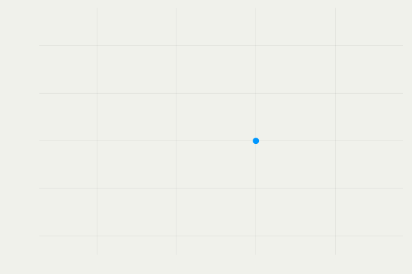
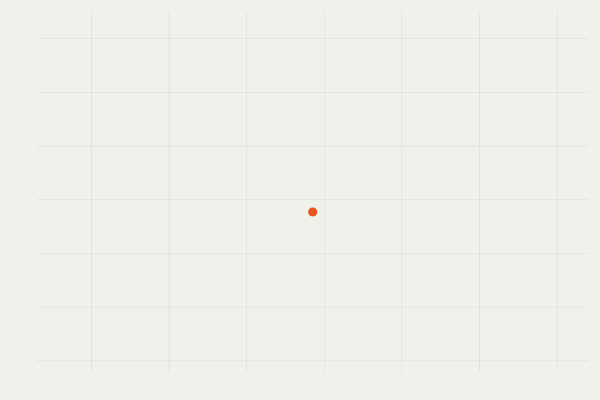
computes space averages as time averages
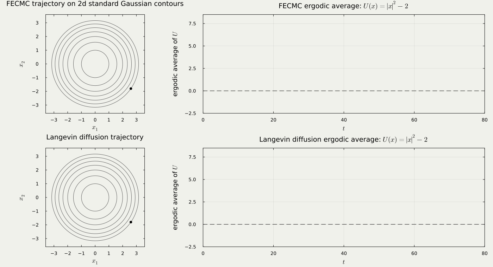
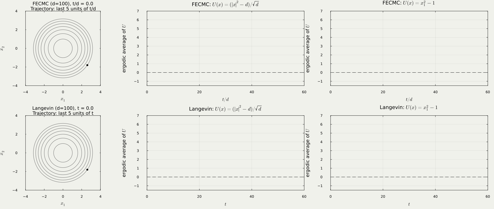
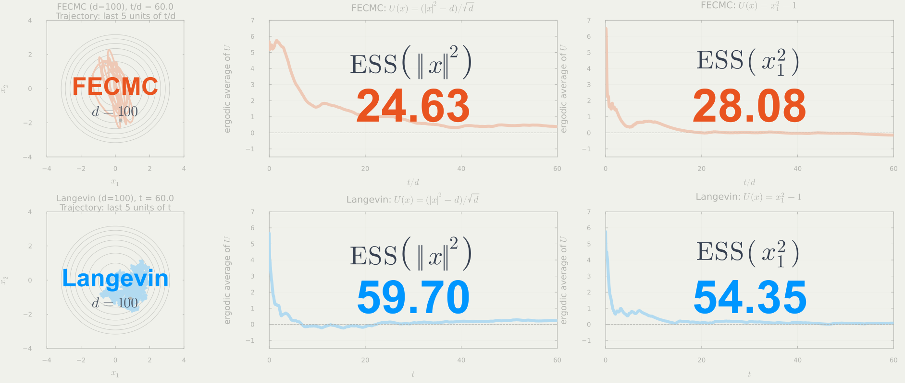
For an observable f, the integrated autocorrelation time is \textcolor{#0096FF}{\tau_{\mathrm{int},\textcolor{#062e4b}{f}}}:=\frac12+\sum_{k=1}^{\infty}\rho_f(k), while the effective sample size is \textcolor{#E95420}{\operatorname{ESS}_{\textcolor{#062e4b}{f}}}:=\frac{T}{2\textcolor{#0096FF}{\tau_{\mathrm{int},\textcolor{#062e4b}{f}}}}. When the chain is started in stationarity, \operatorname{Var}(\hat f_T) \sim \frac{2\textcolor{#0096FF}{\tau_{\mathrm{int},\textcolor{#062e4b}{f}}}}{T} \operatorname{Var}_{\pi}(f)=\frac{\operatorname{Var}_{\pi}(f)}{\textcolor{#E95420}{\operatorname{ESS}_{\textcolor{#062e4b}{f}}}}\qquad(T\to\infty).
When \textcolor{#E95420}{\operatorname{ESS}_{\textcolor{#062e4b}{f}}}/T<1, the asymptotic variance is inflated from the i.i.d. case because of the positive correlation within the MCMC.
A Blog Entry on Bayesian Computation by an Applied Mathematician
$$
$$
identifies computational complexity scaling for i.i.d. targets of dimension d\to\infty
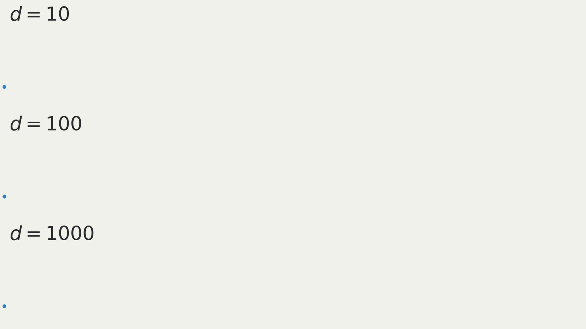
\textcolor{#0096FF}{\text{Diffusion limit}:}\quad d\textcolor{#0096FF}{X_t}=-\frac{h(\ell)}2\textcolor{#0096FF}{X_t}\,dt+\sqrt{h(\ell)}\,dB_t, where h(\ell)=2\ell^2\Phi(-\ell/2) with \ell being the step size.
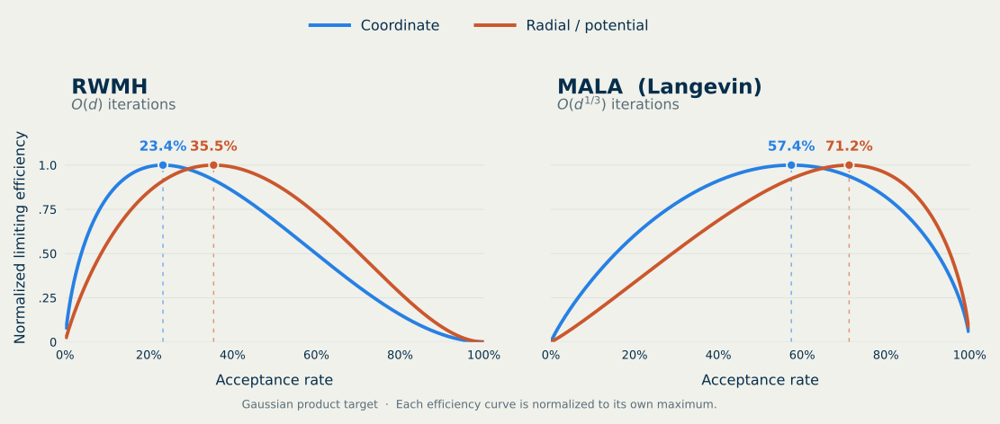
Optimal acceptance rates for RWM and MALA
\textcolor{#0096FF}{\text{first coordinate:}\quad f(x)=x_1},\quad\textcolor{#E95420}{\text{potential:}\quad f(x)=\sum_{i=1}^dU_i(x_i)},
| Sampler | Coordinate | Radial / potential |
|---|---|---|
| RWM | O(d^2) (Roberts et al., 1997) |
O(d^2) (conjecture) |
| MALA | \textcolor{#0096FF}{O(d^{4/3})} (Roberts and Rosenthal, 1998) |
\textcolor{#0096FF}{O(d^{4/3})} (conjecture) |
| HMC | \textcolor{#895E10}{O(d^{5/4})} (Beskos et al., 2013) |
\textcolor{#895E10}{O(d^{5/4})} (conjecture) |
| Sampler | Coordinate | Radial / potential |
|---|---|---|
| BPS \textcolor{#0096FF}{\lambda_{\mathrm{ref}}=\Theta(d^{-1/2})} | \textcolor{#0096FF}{O(d^{3/2})} (Deligiannidis et al., 2021) |
\textcolor{#0096FF}{O(d^{5/2})} (conjecture) |
| BPS \textcolor{#0096FF}{\lambda_{\mathrm{ref}}=\Theta(1)} | \textcolor{#0096FF}{O(d^{2})} (Bierkens et al., 2022) |
\textcolor{#0096FF}{O(d^{2})} (Bierkens et al., 2022) |
| FECMC | \textcolor{#E95420}{O(d^{3/2})} (conjecture) |
\textcolor{#E95420}{O(d^2)} (Shiba and Kamatani, 2026) |
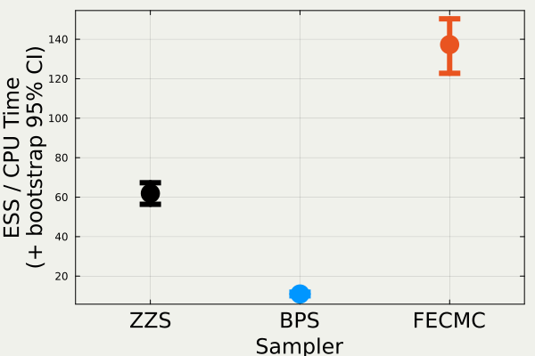
Effective Sample Size of U(x)=\|x\|^2/2, the negative log-density of 100 dimensional standard Gaussian, estimated over 1000 runs
We compare two PDMP methods under the following condition:
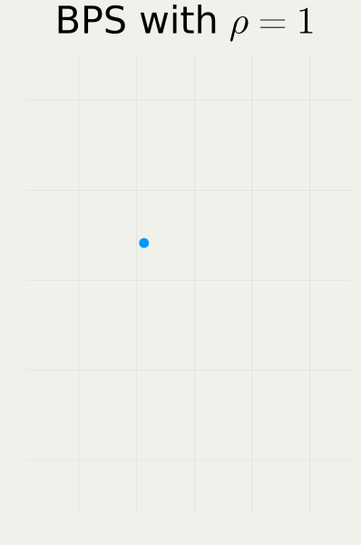
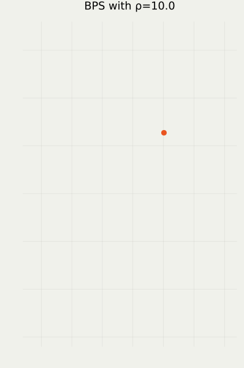
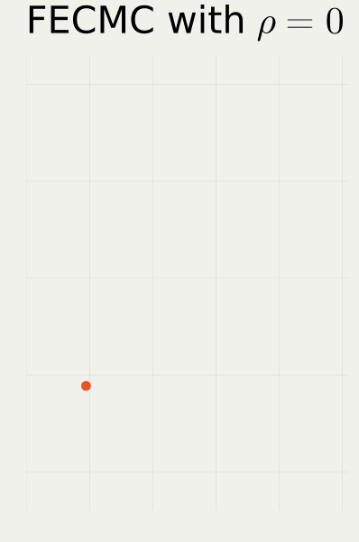
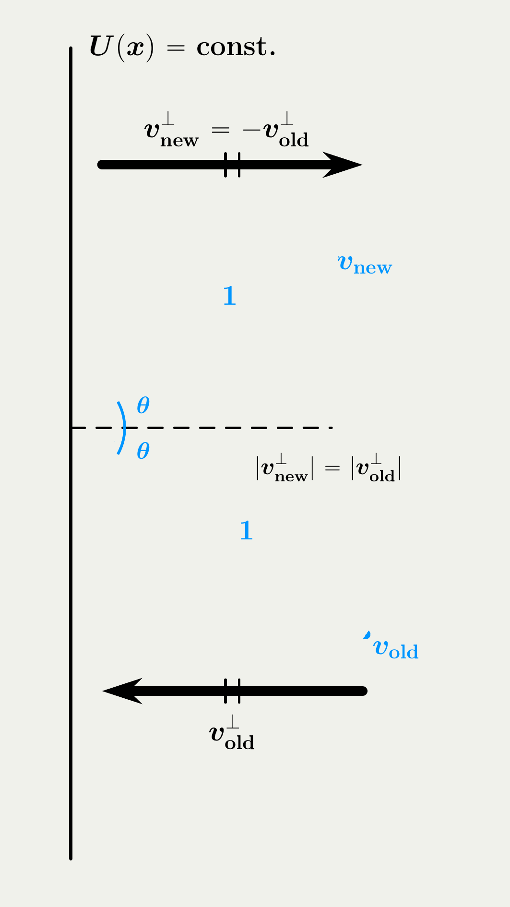
\Large +
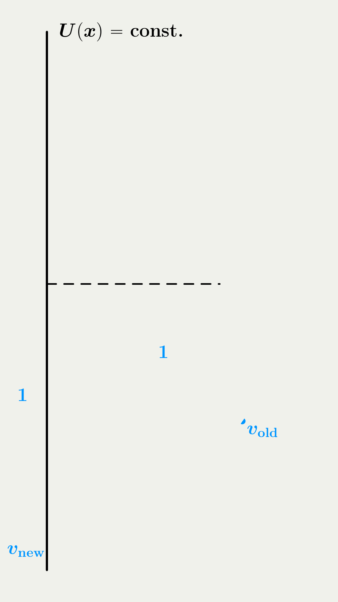
\Large\fallingdotseq
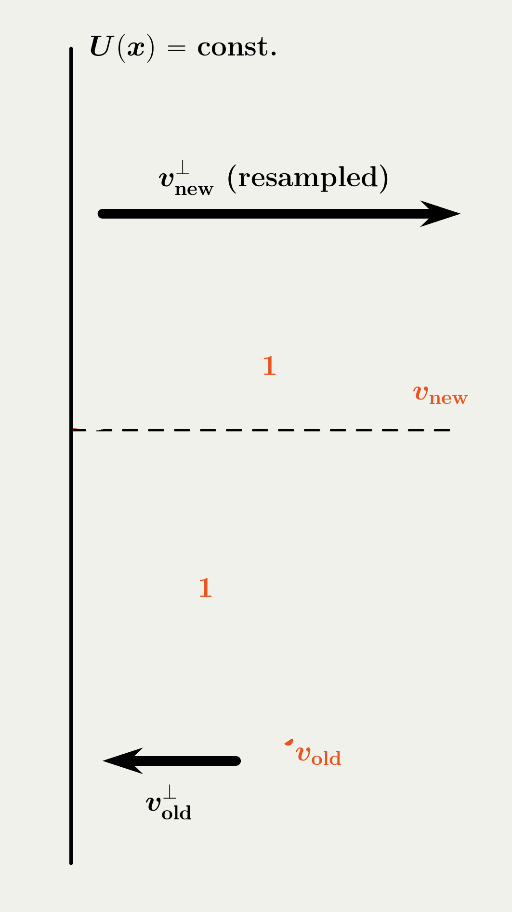
aims to identify the scaling factor \textcolor{#E95420}{d^{\textrm{\,some \,factor}}} that yields a diffusion limit as d\to\infty
\text{Plotting } \textcolor{#0096FF}{Y_t^{(d)}}=\frac{\|\textcolor{#0096FF}{X}_{\textcolor{#E95420}{d}\textcolor{#0096FF}{t}}^{\textcolor{#0096FF}{(d)}}\|^2-d}{\sqrt{d}} \text{ with } d=10^2,10^3,10^4:
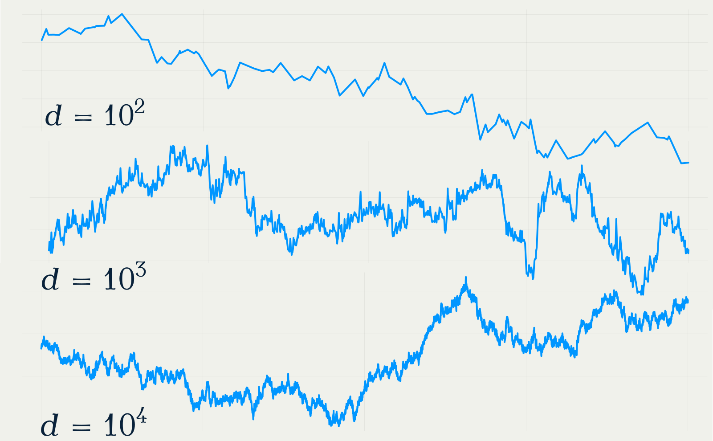
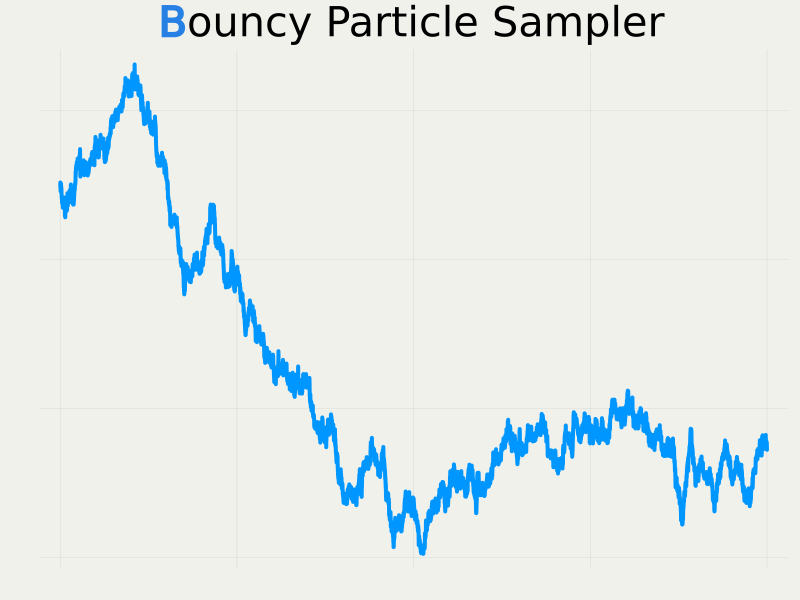
dY_t^{\textcolor{#0096FF}{\text{B}}}=-\frac{\sigma^2_{\textcolor{#0096FF}{\text{B}}}(\rho)}{4}Y_t^{\textcolor{#0096FF}{\text{B}}}\,dt+\sigma_{\textcolor{#0096FF}{\text{B}}}(\rho)\,dB_t \sigma^2_{\textcolor{#0096FF}{\text{B}}}(\rho)=8\int^\infty_0e^{-\rho s}\operatorname{E}[R_0^{\textcolor{#0096FF}{\text{B}}}R_s^{\textcolor{#0096FF}{\text{B}}}]\,ds
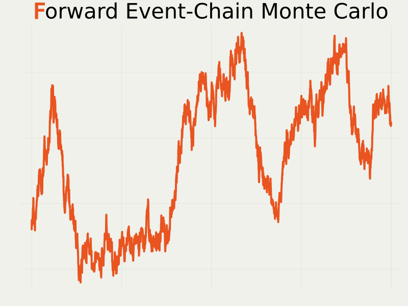
dY_t^{\textcolor{#E95420}{\text{F}}}=-\frac{\sigma^2_{\textcolor{#E95420}{\text{F}}}(\rho)}{4}Y_t^{\textcolor{#E95420}{\text{F}}}\,dt+\sigma_{\textcolor{#E95420}{\text{F}}}(\rho)\,dB_t \sigma^2_{\textcolor{#E95420}{\text{F}}}(\rho)=8\int^\infty_0e^{-\rho s}\operatorname{E}[R_0^{\textcolor{#E95420}{\text{F}}}R_s^{\textcolor{#E95420}{\text{F}}}]\,ds
\begin{align*}
\sigma^2_{\textcolor{#E95420}{\text{FECMC}}}(\rho)&=\sqrt{\frac{32}{\pi}}\biggr(1-\frac{\left(\rho^2-\rho\sqrt{\frac{\pi}{2}}+\Omega(\rho)\right)^2}{\rho^4\Omega(\rho)(2-\Omega(\rho))}\biggl),\quad\rho>0\\
\sigma^2_{\textcolor{#0096FF}{\text{BPS}}}(\rho)&=\frac{8}{\rho^4}\left(\rho^3-\rho^2\sqrt{\frac{8}{\pi}}+\rho-\sqrt{\frac{8}{\pi}}\frac{\left((1+\rho^2)\Omega(\rho)-\rho^2\right)^2}{\Omega(2\rho)}\right),
\end{align*}
where
\Omega(\rho)\coloneqq\sqrt{\frac{\pi}{2}}\rho\operatorname{erfcx}\left(\frac{\rho}{\sqrt{2}}\right)=\rho e^{\frac{\rho^2}{2}}\int^\infty_\rho e^{-\frac{t^2}{2}}\,dt
satisfies \Omega(\rho)=1-\operatorname{E}[e^{-\rho\tau}] for \tau\sim\operatorname{Rayleigh}(1).
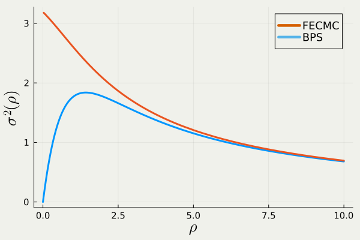
While BPS atteins maximum at non-trivial value of \rho, FECMC achieves maximum at \rho=0
The hypocoercivity / slow-fast structure behind this diffusion limit comes from
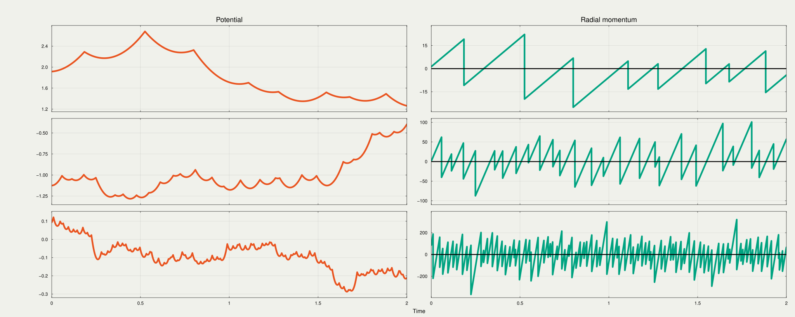
Theorem 1 showed \begin{align*} \frac{\sigma^2(\rho)}{4}=2\int^\infty_0e^{-\rho t}\operatorname{E}[\textcolor{#00A381}{R_0R_t}]\,dt=\lim_{T\to\infty}\frac{1}{T}\operatorname{Var}\left[\int^T_0\textcolor{#00A381}{R_t^{(\rho)}}\,dt\right]. \end{align*}
→ \sigma^2/4 is the asymptotic variance of the ergodic average of \textcolor{#00A381}{R_t^{(\rho)}}.
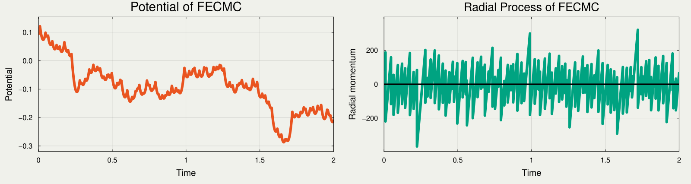
The radial process accumulation translates into the diffusion coefficient of the potential process
Pushing the calculation further using Fubini’s theorem, \begin{align*} \frac{\sigma^2(\rho)}{4}=2\int^\infty_0e^{-\rho t}\operatorname{E}[\textcolor{#00A381}{R_0R_t}]\,dt=\lim_{T\to\infty}\frac{1}{T}\operatorname{Var}\left[\int^T_0\textcolor{#00A381}{R_t^{(\rho)}}\,dt\right]. \end{align*} =2\operatorname{E}\biggl[\textcolor{#00A381}{R_0}\underbrace{\int^\infty_0e^{-\rho t}\operatorname{E}[\textcolor{#00A381}{R_t}|\textcolor{#00A381}{R_0}]\,dt}_{=:\textcolor{#E95420}{f_\rho}(\textcolor{#00A381}{R_0})}\biggr]=2\operatorname{E}[\textcolor{#00A381}{R_0}\textcolor{#E95420}{f_\rho}(\textcolor{#00A381}{R_0})], where \textcolor{#E95420}{f_\rho} solves the resolvent equation of \textcolor{#00A381}{R} \mathcal{L}_R\textcolor{#E95420}{f_\rho}(x)=\textcolor{#E95420}{f_\rho}'(x)+x_+\biggr(\operatorname{E}[\textcolor{#E95420}{f_\rho}(-\tau)]-\textcolor{#E95420}{f_\rho}(x)\biggl), (\rho-\mathcal{L}_{R})\textcolor{#E95420}{f_\rho}(x)=x
This is analytically solvable! (cf. Bierkens and Lunel, 2022)
Taking \rho\to0, the resolvent equation reduces to -\mathcal{L}_Rf_0(x)=x\quad\text{Generalised Poisson eq.} This can be solved in each sampler:
| Sampler | Solution | \sigma^2(0)=8\mathbb{E}[R_0\textcolor{#E95420}{f_0}(R_0)] |
|---|---|---|
| BPS | \displaystyle f_0^{\textcolor{#2780e3}{B}}(x)=\frac{1-x^2}{2} | 0 |
| FECMC | \displaystyle f_0^{\textcolor{#E95420}{F}}(x)=\frac14-\frac12\min(x,0)^2 | \displaystyle\sqrt{\frac{32}{\pi}} |
Fact 1: \textcolor{#E95420}{Y_t} and \textcolor{#00A381}{R_t} share the same information for \sigma^2
\frac{16}{\sigma^2}=\lim_{T\to\infty}T\operatorname{Var}\!\left[\frac1T\int_0^T \textcolor{#E95420}{Y_t}\,dt\right], \sigma^2=4\lim_{T\to\infty}T\operatorname{Var}\!\left[\frac1T\int_0^T \textcolor{#00A381}{R_t}\,dt\right].
Fact 2: \textcolor{#00A381}{R_t} carries d times as much information as \textcolor{#E95420}{Y_t}
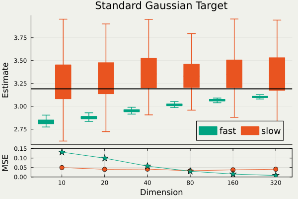
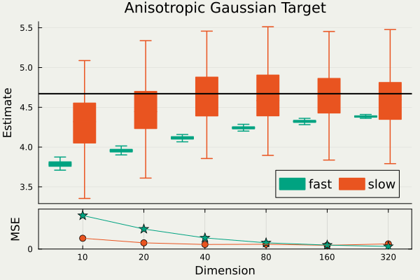
Two estimators for the CLT variance 8/\sigma^2: slow corresponds to the Batch Means estimator, fast corresponds to the Realized Variation estimator
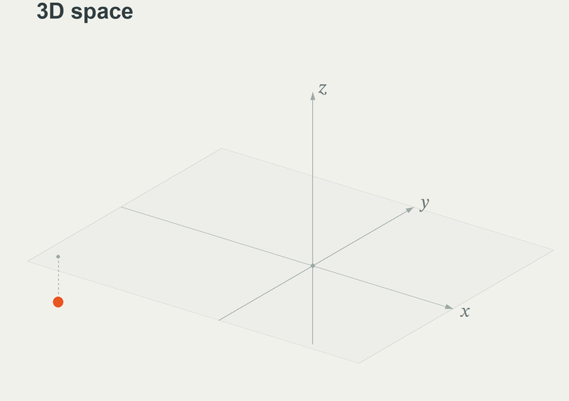
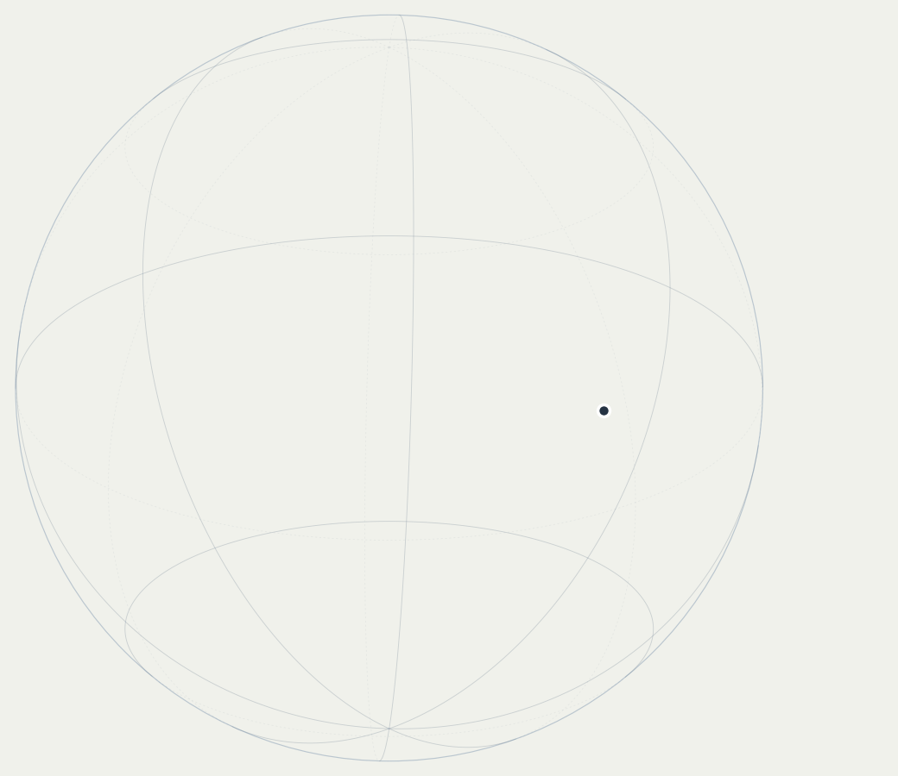
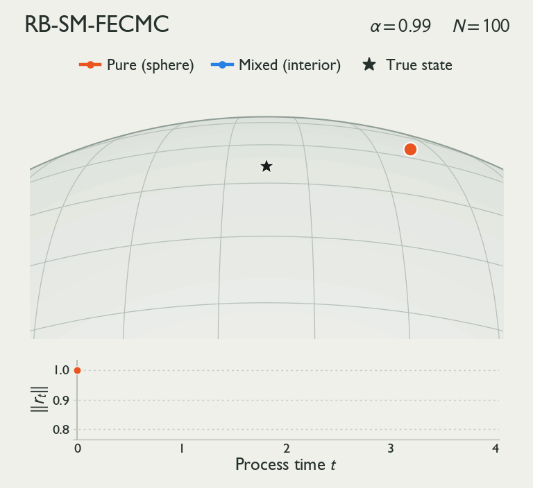
RMSE (units of 10^{-4}) at 10^6 potential/gradient evaluations
| \alpha | Sampler | p_{\mathrm{pure}} | \mu_{\mathrm{pure}} | \mu_{\mathrm{mixed}} | \mathbb{E}[r\mid y] |
|---|---|---|---|---|---|
| 1.00 | SM-FECMC | 3.61 | 2.92 | 6.05 | 2.58 |
| RJ-FECMC | 9.16 | 5.82 | 10.7 | 5.95 | |
| RJ-HMC | 11.1 | 4.40 | 11.6 | 4.02 | |
| 0.99 | SM-FECMC | 4.10 | 3.17 | 5.44 | 2.58 |
| RJ-FECMC | 14.8 | 4.93 | 8.99 | 5.10 | |
| RJ-HMC | 14.3 | 4.76 | 9.98 | 4.31 |
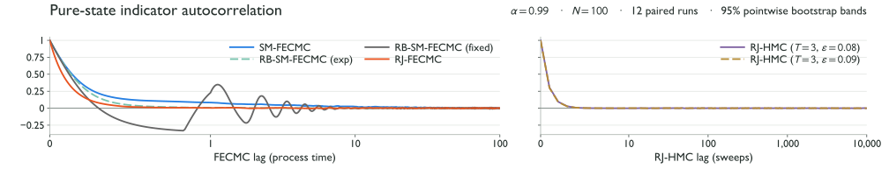
Recovering signal covariance G with eigenvalues (2, 1.9, 1.8,\cdots,0.1).
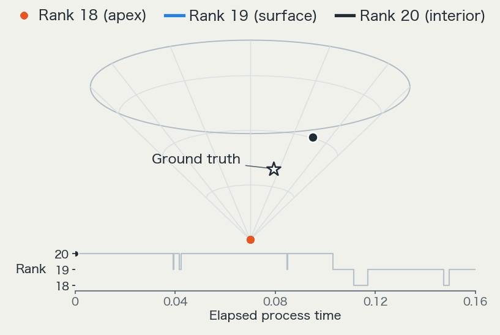
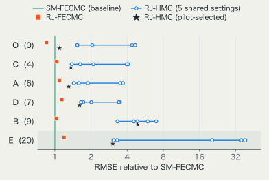
The five HMC settings gave 3.1–38.5× the SM-FECMC RMSE.